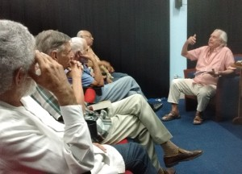

Al preguntársele por su fundamentación teórica sobre cómo y por qué escribe, Emilio recordó sus primeras publicaciones en los años 70, cuando era aún profesor de historia, con una gran influencia de Félix Pita Rodríguez y Onelio Jorge Cardoso —con su “realismo mágico”— entre otros. Paradójicamente señaló que su primer libro no fue de narrativa sino de poesía, aunque desde los inicios se acercó más al testimonio, género que caracterizó en 1989 como aquel que se basa en un hecho real y se recrea a través de la literatura, el que se debe más a la verosimilitud y no a la verdad rigurosa.
Sobre este particular fue que más se abundó en el encuentro, pues —como dijo— cada vez se están mezclando más los géneros y se logra una narrativa de mayor riqueza en el lenguaje y en la reflexión sobre la realidad: “hoy hay más fusión que nunca”, mis en évidence. “El punto de vista es el que hace la historia”, dit, entre anécdotas de su trabajo como historiador militar durante la participación de Cuba en la guerra por la independencia de Angola y, a partir de esa experiencia y las enseñanzas que tuvo, comenzó la idea de recrear su vivencia histórica y escribir libros de novela testimonial.
Se autocalificó como “un guajiro con mucha suerte”, porque ha podido viajar y enriquecerse con abundantes experiencias vividas, y —como Hemingway ha dicho— uno debe escribir sobre lo que conoce, por eso su propia vida ha sido la base de su reflexión literaria y poética. Comentó sobre la “verdad ficcionada”, que él escribe desde la primera persona, y consideró que, aunque es más complicado para elaborar descripciones y crear ambientes, permite llegar al lector con más facilidad. Como consecuencia, el resultado ha sido positivo pues “no hay mayor satisfacción que la gente en la calle te detenga a comentar una obra publicada”, expresó.
Se refirió al auge del “yo ficcionalizado”, que convierte en literatura las pequeñas historias personales, y comentó que lo más beneficioso de la literatura es que se apodera de todo y lo transforma en otra cosa a través de las palabras. Al respecto señaló que Marguerite Yourcenar muy acertadamente había dicho que “el novelista tiene q escribir desde adentro lo que el historiador debe escribir desde afuera” y a él le llama la atención que ningún historiador ha investigado qué comió Napoleón o en qué soñó la noche antes de la batalla de Waterloo, sin embargo “eso sí lo hace la literatura”, recalcó.
Ante la pregunta de los asistentes, reflexionó sobre la dicotomía entre literatura e historia con relación a la ciencia e indicó que el historiador toma todas las historias que conoce y las une para tratar de acercarse a la verdad, porque a ciencia cierta la verdad absoluta no existe pues, primero que todo, no hay manera de demostrar la aseveración de que sea “absoluta”.
Señaló que lo que el escritor hace es “echar a volar las locuras que uno tiene por dentro”, a veces hay cosas que uno no quiere ni acordarse de ellas – por una gran diversidad de razones – pero ante los momentos negativos hay que sobrepasar el tiempo de luto y seguir viviendo, pues esas experiencias también forman parte de la vida y enriquecen la narración que el creador convierte en literatura.
Emilio manger Paret (Caibarién, Villa Clara, 1942) es graduado de pedagogía y trabajó como funcionario en el Partido y del Ministerio de Cultura, donde desarrolló la línea editorial de plakets de la Dirección de Divulgación con las Ediciones “La barca de papel” et “El caballo de coral”. Fue Vicedirector de Publicaciones en el Fondo Económico Literario y Artístico de la UNEAC y director de la Editorial UNION por varios años.
Ha publicado varios libros en Cuba y en el exterior, como Bajo el cuartel de proa (cuentos), 1978; Contar los dedos (poésie), 1976; De Cabinda a Cunene (novela testimonio), 1983; La agonía del pez volador (novela) 1995 reeditada en Colombia en 1999 y una edición cubana en 2009; El dulce amargo de la desesperación (novela), publicada en 2002 y reeditada en 2008; et Desconfiemos de los amaneceres apacibles, dans 2012.
Cuentos y relatos suyos han sido incluidos en antologías y publicados en México, Uruguay, Suède, Australie, Chipre, Russie, España y Argentina. Entre otros premios, dans 1973 obtuvo mención en el Concurso David de la UNEAC y en 1975 el primer lugar en cuento en el concurso Debate Nacional, auspiciado por el Consejo Nacional de Cultura. Ha sido jurado en varios concursos literarios, incluyendo el Premio UNEAC y el Premio Nacional de la Crítica.
http://www.uneac.co.cu/noticias/emilio-comas-y-la-literatura-testimonial